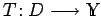
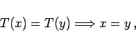
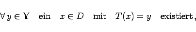
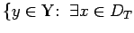
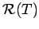
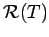

Inhalt Index DeskTop Bronstein

 Funktionalanalysis Vektorräume Lineare Operatoren und Funktionale
Funktionalanalysis Vektorräume Lineare Operatoren und Funktionale


Eine Abbildung  der Menge  in die Menge
in die Menge  heißt
heißt
|  | (12.19) |
|  | (12.20) |
D wird Definitionsbereich des Operators T genannt und mit DT oder D(T) bezeichnet, während die Teilmenge  mit x=y} aus  Wertebereich des Operators T heißt und mit  oder Im(T) bezeichnet wird.
Wertebereich des Operators T heißt und mit  oder Im(T) bezeichnet wird.